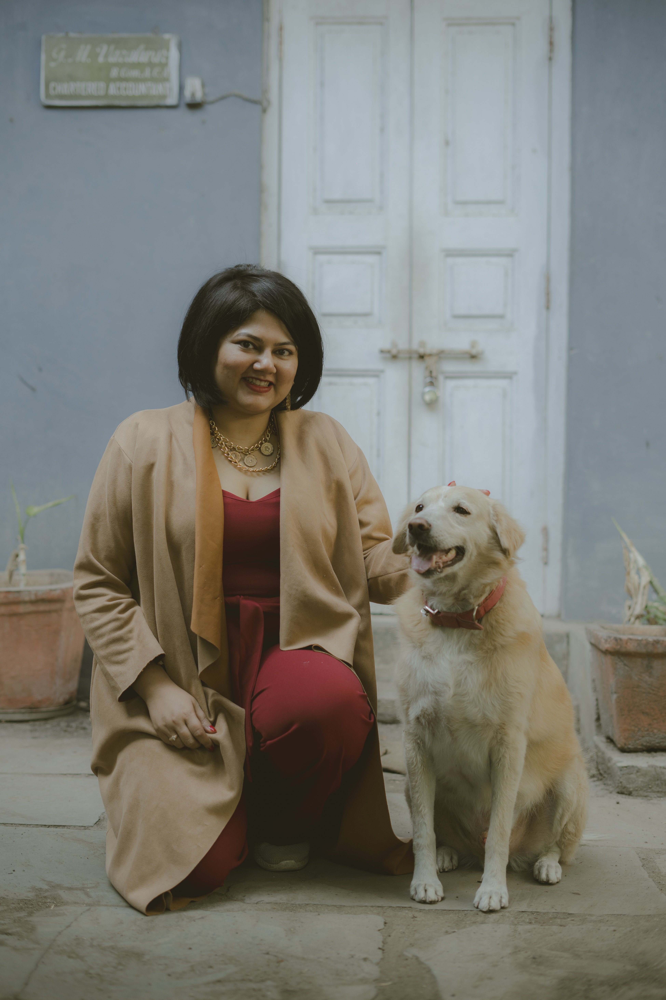

About Us
Our mission, objectives, and the people behind the cause
About the NGO
Mission
"To create a culture where animals, especially companion animals, are seen, valued and treated as the sacred, sentient and magical beings they are. Their treatment reflects the consciousness of our society."
Objectives
- Encourage rescue of Indie dogs
- Promote fostering and adoption
- Advocate for animal welfare
- Build a compassionate community for animals
About the Founder
Malvika Vazalwar

Malvika was raised on animal-centric movies by her grandmother. The first movies she watched were "Azaadi Ki Aur" and "Born Free", which shaped her love for animals.
Her first rescue was a chick she adopted as a child.
During the COVID lockdown she rescued and fostered 16 street puppies and began initiatives such as:
- Adoption interest forms
- Thrift fundraisers
- Community awareness campaigns
Credentials & Recognition
- Certified in canine nutrition
- Energy healing practitioner
- Wedu Rising Star
- Animal Charity Evaluators scholarship student
- Alumni of She Creates Change (Change.org)
Featured In
- Times of India
- The Quint
- Feminism in India
- Youth Ki Awaaz
- Elephant Journal
- Thrive Global
- Dogs & Pups
- VOSD Blog